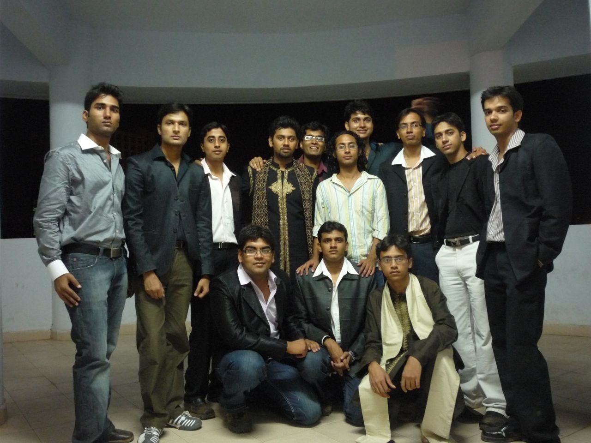

The Yearbook - Commemorating 2005-09!
Raman Jain's profile information
Name - Raman JainBirthday - 06-03-87
Email - ramanjain@students.iiit.ac.in
Address - 76/26, Shipra path, Mansarovar, Jaipur, Raj
Phone - 09966723076
Hobbies - Masti Music BCing Sleeping
Memorabilia - 12th July 2007, Felicity08 3rd day, Goa Trip in dec07
What would you want to be remembered as - Rj !!
Future Plans - MS under Jawahar [:)] so -> no other plans
Testimonials written by Raman Jain
Raman Jain's Album

{kind=link}
Bhai logo ke saath :)

Default caption
Testimonials
Abhinav Parashar wrote-CPinas -> CPians ( Carrer point wale )

Abhinav Parashar wrote-
OMG ...we both were writing testi for each other at the same time ....
 I just saw urs
I just saw urs  ..
..
Ramanna ... aka ... Raman ... truely a simple and nice guy. Band dil ka bahut achha and helping insan hai.
Really hard working. Laga rehta hai...
 ...
...
He is one of a few CPinas of our batch.

He is really a friendly and fun loving guy.
Bhai tera wo deewar par chadh ke ...... wala kissa kabhi nahi bhoolunga ....
Chal best of luck for ur MS and wish u a bright future.
Touch me rahio dost .
harshita wrote-
raman is a very cute guy....we were never gr8 frnds...but i remember him saying ....harshita tu patli ho jaayegi to achi lagegi and all
...we were in the same section..B...the duals  ...that date incident made us quite famous ...over all he is a nice and sensible guy...all the best
...that date incident made us quite famous ...over all he is a nice and sensible guy...all the best Srirang Ranjalkar wrote-
Raman aka RJ.
Isko to main first 2 years me sirf naam se jaanta tha. 3rd year me jab hum OBH me saath me aaye tab hi se ise bahut achi tarah se jaanne laga hun.
First of all I'm very sorry yaar, maine tere saath kai baaar misbehave kiya. But kya karun koi mujhe peeche se maare mujhe bilkul acha nahi lagta. Fir chahe wo mazak se ho ya jaise bhi.
ok. coming to the point. This guy is one of my best friends in IIIT. Ups and downs are quite common in life but I like his attitude towards life. Enjoy bhi karo, kaam bhi karo aur hamesha haste raho.
. The first word that comes to my mind whenever I see him is "Bindaas!!!"
Awesome!!
Felicity 3rd day ye mere saath baith kar bahut roya. Itna ki matlab mujhe bhi rula diya almost. Woh main kabhi nahi bhula sakta.
Iske baare me mujhe bahut jyada to kuch pata nahi tha. But Junior treat me pol khul gayi aur main to iska bahut bada fan ho gaya. Matlab banda kuch bhi karne se oehle jyaada sochta nahi hai ki anjaam kya hoga! Wah kya attitude hai! Ekdum "Bindass!!" wala.
Chalo abhi time ke constraint ki wajah se main aur jyada nahi likh paounga. But chance mila to is testimonial ko thoda sa aur extend zaroor karunga
Keep rocking buddy. I know that you've a great future and that you're going to go places. And my best wishes are always with you.
Love
DJ Ranga
Himank Sharma wrote-
Raman bhai
One the most favourite person of mine in our group and batch. We have never been the closest of friends ever but he has always been very close to my heart. He is one of the people who I would miss a lot once I graduate out of this effing place
He is always frustrated by the fact that jab bhi milta hai marta rehta hun isko but pata nahin kyun itna zyada maza ata hai isko marne mein
Bande ki harkaton ke bare mein to kya hi bolna, har din koi na koi naya kand
Is bande ke upar to ek cartoon strip ban sakti hai. Raman bhai will miss you all these antics All my life will remember this blank face more than any of the most b'ful faces I have laid my eyes on and your style of greeting me Bhalu ki Jai Ho
Always remain as you are, Its been such a pleasure to have you in my life always remain there for me. Bahut zyada miss karunga mere bhai tujhe
Thankfully tu dulla hai nahin to it would have been a void large as a crater in my life. Aate rehna bhai humare ghar pe
Luv u Raman Bhai

Song for you : Main Aisa kyun hun
Sorry for such a time pass testi.. Someday!! (Will always remember your love for MLTR
) Someday I will write another one Abhishek Sainani wrote-
Raman... I find him as a cool guy but sometimes traps himself on his own, I've seen this in some discussion during dinner.
We had good time in batch trip in 2nd year... don't know much about him but we've always had pleasant conversations, mostly on the dinner table in OBH-GF mess.
Few weeks ago we went to club 8 and he drank his beer in the bottle itself, the important part is when he looked at me,(he hadn't start drinking yet) smiled and said, "Hum yahaan bahut baar aayenge agle saal."
Reminds me of Sanjay Kapoor.
All the best for the future dude, I'm sure it'll be better but not the same as these college days.
Karan wrote-
Part 2
Coming to our relationship, we were never great friends. But over the years, I've started to develop respect for him as a person, something which is the bedrock of all relationships. I told the same to him in one of our daroo sessions. Though we've never been that close, the respect for you will be there mate
Other things about him- hes Mr. blank, plays good tt but has never been a regular, is very cute and a lot of senior girls loved him during ragging
, enjoys working out, loves his pals.
May God bless and give you the best in life!
Character he resembles: Fez from That 70s show
Fav memory: The cock incident in Alleygator
Message for him: Dude, be more confident about yourself
Peace.
Karan wrote-
Part 1
Himank and I were discussing the other day as to how everyone in the batch could be classified as an 'item'. And Raman has to take the cake for that! You could nearly make a comic strip on Raman, a volume of which should be titled, "Raman and Pappu".
I started interacting with Raman when the group formed, I remember that he lived in cellar in a very clean room. However, I found him (still so) an irritating guy
. He would pass silly little comments which'd make you go "grrr...." . However, the thing about Raman is that he is very pure at heart. He might say off the cuff remarks when the situation doesnt demand so, but his intentions are always right . He thinks good for the people he likes, and there are quite a lot of such guys .
Of course, with those remarks he manages to shift the focus of "leofying" on himself, just like how I'd do earlier. But people, especially Pappu, are often the victim of his sense of humour. Dude, remember that conversation about the filmfare awards?
 Poor Pappu.. Then there are those acts of his.. The Orissa case with Vibhav has become.. well, legendary! What a situation man
Poor Pappu.. Then there are those acts of his.. The Orissa case with Vibhav has become.. well, legendary! What a situation man
We also pull his leg about him passing out only in 2020.. The entire plan with wife and kids is ready
. Jokes apart, Raman has become quite serious towards his acads these days, something which he was not in the first two years. I guess pursuing an MS by research under Jaws does that to you.. Plus the leofying we did seems to have done the trick. You can now find him in the lab or room, coding away to glory!
Of course, all the above is when he is not sleeping. He simply loves it, would not be wrong to compare him with Kumbhakaran. There was this joke of Raman dreaming about him sleeping, and then the same thing happening in recursion.. What would happen if the alarm rings.. Which Raman would get up?
(continued..)
Atul Dwivedi wrote-
Raman Bhai ..the Researcher .. mai isko Researcher kahke bulata hun ... bindaas banda hai .. jo bhi man mein aata hai bol deta hai ...lekin kabhi to soch ke bola kar ..
Banda cool hai ..... bilkul meri tarah ..
Ab kya bolein ...log isko thode jyada maje lete hai .. lekin banda dil ka accha insaan hai .....
REsearch paper chaap diya bhai ne wo bhi javahar ke sath awesome be ... !!
Pahle iske baare mein mai galat sochta tha .. lekin jab apan close aaye to pata chala ..banda sahi hai ... !!
Now we shares very good jokes with each others ... !!
Mujhe abhi tak wo incident yaad hai ..jab hum log Bhopal tak sath mein the ...mast maje aaye the us din to ...
BC .. bahut ki hai hamne .. Daddu ke room par ... Ye daddu ke maje bahut leta hai..lekin beta mere se jyada nahi le sakta ..thoda seeksha ki jaroorat hai tujhe ..
iski ek awesome si story hai .. jisko soch soch ke mai bahut hassaan tha ..baaki stories to hamari treat mein pata chal hi gayi thi
Ab bas yahi kah sakta hun ki .... MS complete kar ..
Prashasti Gupta wrote-
I have heard a lot about him from my friends...
He is like this mirror..where nothing is hidden...he is a straight forward person ..who often ends up in trouble coz of 'I speak before I analyze' kind of nature...but it is easy to know this guy ...
He loves sleeping and pulling Vipul's leg..
..
Jaws se bahut darta hai ...I remember when we used to meet outside Jaws's room for meeting...and used to ask everyone who came out .."what happened?, Jaws ka mood kaisa hai ? teri bahut maari kya ?"...he used to be so scared of him....but he started working in 4th year...got a paper published aur jaws ka fav ho gaya hai ...
I sincerely hope tu time par nikal jaye ...but I have my doubts
All in all a nice person who is 100% genuine..no faking
All the Best yaar
Bhagwaan aur Jaws kare ki teri thesis time par ho jaye
Aniket Sharma wrote-
Raman, another guy who came with me from Ajmer. Was my room partner for the first day, aur pehle hi din meri maarne ka jo silsila isne start kiya, vo aaj tak chala aa raha hai
Kitni hi BC ki hai is se Ajmer ke baare mein. Isko Ajmer mein main Raman Bhaiya kehta tha. Kaun maanega bhala is baat ko, par ye sach hai. Ajmer mein hamara thoda common friend circle hai, aur mujhe jab bhi kabhi updates chahiye ho, to Raman Bhai hamesha haazir. In fact, iske bina Ajmer ke us part se mera rishta shayad chhoot sa gaya hota.
Iske baare mein ek quality bahut unique hai. Vo ye ki iske chehra sheesha hai. Tum aar paar dekh sakte ho. Gussa, fatna, hansi, chutiyaapa, frustrations, khushi, sab ki sab chehre pe ekdum awesome tareeke se dikhti hai aur express ho jaati hai. Aut thodi der baad uski jageh doosra emotion le leta hai. One minute he's discussing some fodu plans wth his blood brother, and just the next moment he'd start venting out his frustration over Jaws. Bahut jaldi emotions change hote hain. Aisa banda maine aaj tak nahi dekha.
Raman poora comedy machine hai. Jahaan ye hota hai, comedy apne aap barasti hai. He's a natural at it. Jitne kisse iske sune hain, utne shayad kisi aur ke naheen sune honge.
Par kaam ke maamle mein banda heera hai. Hats off to the sharp mind and the hard work and determination with which you must be working in order to do so well under Jaws. And your english is just fine, nothing wrong with it. Improve karna hai to dheere dheere ho jayega, koi badi baat thodi hai. Aur baaki emotions to theek hain, but gussa thoda suppress kar lia karo.
Do well in your MS. I'm sure it won't take long. All the best for life!
Memories: The one day we were room partners for. And then Vipul revealing 'the' secret in final year.
Person you resemble: None. Raman is unique.
Tags: Ajmer, TA, CVIT, awesome.
Subhashis Chand wrote-
Raman Bhai
For the first two years,I have misunderstood him.
I was rude back then. He is a gem of a guy. He doesn't have any negative feelings about anyone. He is lazy, loves sleeping. He has given us some of the most hilarious moments. I will never forget the "NIFT incident". Raman Bhai ke liye kuch embarassing nahin hota, he feels these are the moments he will cherish through out his life
and so true. He is a very good programmer, phodu TT player but he gets nervous on big ocassion, he has the talent to beat the best in the game but loses out due to temperament. He is doing MS under Jaws and working his arse off. It took time
to know this guy, he doesn't mean what he says, bhai dil se bahut aache hain. There are many stories of him which will go as legendary kisse, many have asked me to start a comic strip on Raman Bhai. Whenever he is around, the gathering
gets all lightened up! He is an integral part of the group. BC is incomplete without Raman Bhai. He gets lost just like me, carries a blank face when someone is leofying him. He is a very good singer and bhai mast gaane compose kartein hain, I remember how creative he was when we were writing songs on our friends, especially "Ooo Chiku tu aisa kyun hai ...."
Raman Bhai jyada nahin pite but jab bhi peete hain.. one bottle is enough to get him tight
I will never forget the time I spent with him when he was drunk, be it the Farewell treat
to our seniors or Felicity'08. He is a great guy to hang around with, whenever he is with you there will always be moments which will bring a smile on your face. You are a great friend bhai. All the best for your MS, I know you will complete it in five years. All the best for all your future endeavors!
Cheers!!
Manish Arora wrote-
Part 2
Koi bhi kaam karne ke liye kafi passionate rehta hai aur bahut sochta bhi hai uske baare mein, whether it's his work in CVIT or working out in gym or dancing, anything. This guy goes blank as well many times. Mote ki bahut mast leta hai ye banda. Kabhi-2 isse agar kuch baat ya nonk-jhonk ho jaye, to ye yaad nahi rakhta use, bahut hi jaldi bhool jata hai. A lot of memories are there but no time for those now. You are a very good pal for me dude. And yeah, a serious thanks for paying the frequent visits to my room. I can never ever forget those. All the best for your MS and your future. May God give you whatever you aspire for in your life. Never forget me and keep in touch
. The only suggestion I would like to give you is increase your confidence level a bit at whatever you do. Whenever you start something, just think that you can easily do that and then I'm telling you, you'll see wonders. Don't worry about all these 2020 jokes. I'm confident that you'll be able to complete your MS in 1 more year. Bhai ko mat bhooliyo aur hamesha touch mein rahiyo yaar . I'll really miss you and our awesome bc sessions. God bless !!Manish Arora wrote-
Part 1
Mr neat and clean room. Iske room par jab bhi jata hun, mujhe neend aa jati hai. Kya karein, inductive effect bhi kaha ja sakta hai use
. Raman ke sone ke kisse to bahut popular hain hi. Sapne mein recursion mein kaun sota hai? But coming to more serious terms, bahut hi shareef aur bhola banda hai. Iske saath bc karne mein khoob maza aata hai. Gopiyon mein kanhaiya vale kafi kisse sune hain iske and I like the way he narrates those. He and Adi are the only guys who used to visit my room frequently. Thanks a lot for that buddy. That really meant a lot to me . Main pen drive lekar maximum times iske ya Mathur ke room par chala jata hun instead of downloading the things myself as I'm very lazy at that. Iska "oye Pagare" vala incident to bhoola hi nahi ja sakta . Iski kaafi lene par bhi ye banda bilkul bura nahi maanta aur agar maanta bhi hai to thodi hi der mein thik ho jata hai and I really admire that a lot as that behaviour is exactly opposite to mine. This guy is very good at maths. He and Pagare are really good mathematicians. That's why I have a special respect for him. Gym jane ka sochta hai lekin thode hi dino mein josh thanda ho jata hai. NIFT, poty on the road and cock vale kisse bhi nahi bhulaye ja sakte . Har time bechara kisi na kisi controversy mein fasa rehta hai jinmein se kafi time to isne kuch kiya bhi nahi hota. A very good TT player he is and I have definitely learnt a lot in that game from him. Kafi mehnati banda hai. Aajkal kafi time lab mein spend karta hai. Let's hope ki ise MS jaldi hi mil jaye. We have taken part together in group singing a few times and we have won some points for our house as well. A good singer I must say.
(Continued..)
Shrikant Nigam wrote-
Raman Rox is what RR should stand for, but it doesnt
. We have wingmates throughout our college life. We very often go to each others room just to irritate each other or to take an advice on which movie should I see . If you ask me I would say he is a very funny guy, but in his very own distinctive style. He has this ability to lighten up the situation at darkest of hours, though he does it unknowingly .
I dont know how but somehow we have tried to keep our friendship strong even after all the differences that we have had. And that just makes it all the more special. It very often happens that we remain silent and dont talk to each other and then some time passes and we get along very well for some more time. And the cycle just keeps going on. That apart, I admire this guy from the bottom of my heart for a few of his qualities. He has upped and then maintained his confidence level even in the toughest of times. He can leofy anyone with his witty comments. But it happens so rarely anyone hardly knows about it
. He is always ready for the photoshoot, making weird faces and giving unnatural poses. He wants a perfect six pack but has never been to gym for more than 6 days at a time. I think he is a bit impulsive as well. Dude you have all the time, use it everytime before you speak. Its just a piece of advice.
I would sum up it now and like you to believe in yourself. Remain COOL and DASHING as you are.
Chirag Nahar wrote-
Part 3
Lots of sweet memories associated with him in these four years like - grand outing in 1st sem, RR incident, BC sessions in NBH-47, 12 July 2006, coke(cock) incident in Alligator
, DBMS project, PT in summers after 2nd year, his crying even before getting any b'day bumps, NIFT incident , sleeping in recursion  , vision 2020, the joy on his face jab ye pappu ki leta hai (which is very rare though ), his peeking through the window of my room to see if I am watching the stuff, THE kand with Pappu last month , last club8 outing when he assumed the beer mugs to be dumbles and started working out using them. There a lot more to add to this list but I am unable to recollect now.
, vision 2020, the joy on his face jab ye pappu ki leta hai (which is very rare though ), his peeking through the window of my room to see if I am watching the stuff, THE kand with Pappu last month , last club8 outing when he assumed the beer mugs to be dumbles and started working out using them. There a lot more to add to this list but I am unable to recollect now.
Thanx a lot RJ for all the entertainment, help and support that you have given me in these four years.
All the best for your MS and your future . Hope you complete your MS by next year.
God bless you !
Fav memory - I won't write here but I think you know
.
Message for him - Think twice before you speak but don't lose confidence.
Chirag Nahar wrote-
Part 2
Lazy to the core, but all that laziness vanishes when he receives a mail from Jawahar
 . Inspite of all the BC that he does, he somehow manages to please Jawahar and complete his work on time. There is a complete change in his behaviour when he does his MS work, gets quite serious and enters into a silent mode with all his focus on his work. Never imagined a guy like him doing MS in CVIT (esp. under Jaws) but now seeing him work I feel that he will complete his MS on time.
. Inspite of all the BC that he does, he somehow manages to please Jawahar and complete his work on time. There is a complete change in his behaviour when he does his MS work, gets quite serious and enters into a silent mode with all his focus on his work. Never imagined a guy like him doing MS in CVIT (esp. under Jaws) but now seeing him work I feel that he will complete his MS on time.
He is definitely the undisputed champion when it comes to doing 'Kands'
. Not a day passes when there isn't something hilarious about him to speak of. Looking back at all these years I must say a complete book can be written about all his famous Kands. I wish I had video recorded all the famous acts he did in these years and I bet that would have been better than any sitcom ever made. With his presence in the wing there is a different atmosphere altogether.One can see other wingmen listening to his latest deeds and rolling on the floor laughing after that .
Inspite of all the fun that we had in these past four years, he is one of those guys with whom I had the most number of fights, sometimes for some really weird reasons. But the best part is just within hours after our little skirmish one of us
initiates the conversation and things are again back to normal and the bond of our friendship even more stronger. He is one of those guys who never thinks before speaking and says whatever comes to his mind without caring about the consequences. A lil piece of advice that I would give him is to think twice before you say anything to anyone because you may be taking it in a joking manner but it might hurt feelings of others. Everyone has certain limits and you should beware not to cross them.
Chirag Nahar wrote-
Part 1
Raman aka RR aka Sotla. Got to know him in first year through Daddu and looking at his abnormally thin built made me feel he was a survivor of some concentration camp
. Back then he used to visit our room a lot and me and Pappu had sheer fun
leofying him
. A total bindaas guy who never cares about things much and takes them in a very light manner. Never seen him getting emotional over anything at all. He is a victim of constant bullying by a lot of people of our batch and he rarely feels bad about it.
His obsession with sleeping is indeed amazing. 'Duniya mein kisi ne kisi se itna pyaar nahi kara hoga jitna ye sone se karta hai'
. Can sleep almost anytime and anywhere , even while standing in a bus. Hats off to his passion for sleeping . Becomes really dumb at times when given to process a lot of information in a very short time and comes with some hilarious replies . Even goes blank at times  when things go totally over the top of his head and thus got the knick - Mr. Blank.
when things go totally over the top of his head and thus got the knick - Mr. Blank.
Quite good at playing TT but never plays to his potential in inter-house or inter-batch matches. Even has a good voice which he showcases through singing in the wing but is overshadowed by the way he messes up the lyrics and is fun to watch
. Can't sing the same line twice with the same lyrics, always has something more to contribute to it. From time to time there comes a josh in him to go for body building and comes to my room and says - 'yaar chike ... ab se roz 4 ghante gym, 2 ghante subah, 2 ghate shaam, kya bolta hai '. But all this enthusiam subsides in the blink of an eye. A 'chuimui' who has almost zero tolerance power and makes a rotlu face  even when someone pats him lightly.
even when someone pats him lightly. Sunil Soni wrote-
chicken jain - a rajasthani guy who actually dont know much rajasthani ....
bahut bada BC baaz hain sala ... kahi bhi BC marte rahega ... room mein, mess mein yaha tak ki class mein bhi ...
"raman jain chicken khata hain" .. this sentence made us acquainted n then made us friends ... initially he used to get very much irritated when i told him this n each time he used to control his tongue n stop his anger from expressing it ...
par aaj kal saale pe kuch effect nahi gir raha hain n iam very disappointed about it .... bahut maja aata tha uske reaction se jab bhi maine ye bolta tha ...... especially public mein bolta tha to ...
kafi short-tempered hain par at the same time control bhi bahut karta hain express nahi karne ki ...
al d very best dude for ur MS degree n haan ache se body building karna
keep rocking bey ...
Manish Sharma wrote-
He is a very dedicated and nice hearted person.
He is a very good and caring friend of mine. I can rely on him in my bad times. He has helped me a lot in last four years.
Jab main CVIT mein tha, tab ye hi mere ko padata tha ..... manta hun ki mere grades kabhi un courses mein achche nahin aaye .... but isne poori koshish ki mere ko padhane ki ..

If you have a problem, others would make a fun of you except a few who would try to help you and this guy is among those exceptions.
Actually, meri mom ne mere ko train mein akele j/aane se mana kiya hai. And most of the times, yeh banda apni research se time nikal kar mere saath chalne ko ready ho jaata hai kyunki yeh meri problem samajhta hai.
And the quality for which I admire him the most is his UNSELFISHNESS. He does not help others to get something in return.
I wish to write a lot about him ..... but that lot will also be very little.
I just now wish to dedicate a few lines to our friendship ..
Tujhe bina mile mera..
Nahin ye din gujarta hai ..
Koi aur na samjhe ..
yeh mera dil samajhta hai
us dosti mein bhi kya maja ..
jahan nokjhok ka zarra naa ho
na paida hone denge wo haalat ..
jisme humein apni dosti ko khona ho
yeh jivan to pal bhar ka..
ek pyara nazara hai
par is jivan se bhi badh kar
apna janmon ka yaara hai
All THE VERY BEST for your future, mere dost
I wish ki humari dosti humesha kayam rahe
CHEERS.
Sanket Sharma wrote-
Samay badla, room badla, frnds badle, badla sara jahan lekin bhaiyon ye kabhi nahin badla. Aaj bhi vaise hi ____ hai jaisa pehle din tha. I mean smart.
We know each other for last 8 years now. In first and second year we have shared a lot of time together. Almost shared our hearts out. Iski sabse badi khubi ye hai ki koi baat chhupane ke kitni hi koshish karle, nahin chhup sakti. Dil ki baat zuban pe aajati hai. Kai baar to banda ache se ache joke par bhi expressionless ho jata hai. Dil ka bahut acha hai. First and second year pass mujhe issi ne karaya hai. Kuch uplabdhiyan iske padane se jo maine hasil kari wo arz hai. DBMS padaya dikka aaya, CO padaya Cikka aaya, C padaya cikka - aaya, Maths padaya B- aaya aur jab kuch nahin padaya 3rd year mai to 9 pointer banaya. Well jokes apart doston, ye nahin hota to aaj mai first year mai hi atka hota.
College se vidayi ka mausam hai, khushiyon ko dukh mai tabdeel hote dekh raha hun... arz kya hai.. daat chahata hun sabki.. isse acha dost khuabon mai bhi nahin sochta hun. Raman is gareeb naacheese ko kabhi apne se door na karna
...
Once in second year I got to visit his home for lunch in Jaipur. Just to save 5 Rs of petrol he dropped me to the nearest bus stop and asked me to go by local transport in rajasthan ki may ki garmi mai. Acha bartav kiya dost, yaad rahega
/
I sometimes realize tere second floor pe hone se apna interaction kam ho gaya. Best moment yuktahar mai dinner karte hue BC karna.
Dude now we are towards the end of a golden era. I have cherished every moment with you. Be the same. Good luck for your MS.
Piyush wrote-
When I finished writing last testimonial .. I felt theres still more to write about this fellow. Somehow it didn't feel complete.
As this guy is my neighbor, we have had endless BC sessions in our wing. One of the unique quality of raman you wont find in anyone is when he sings.. he can't remember a single line of any song.. you say him to sing the same song twice and he will sing with different lyrics
.. Theres one more quality .. jaldi bura nahi manta .. kai cheezo lite leta hai .. And I appreciate you for that.
He also suffers from the I-keep-my-room-clean syndrome. He watches sitcoms like OC and .. I have heard its a drama .. but I have seen him laughing like anything while watching OC .. I don't know why
.
He is a great TT player .. and likes to flaunt it while playing .. he will try to smash at every serve aur jab nahi padti to drama karta hai.
As I said hes my neighbor .. whenever I listen to loud music .. either he comes to my room or buzz me to slow down the music .. I hate him for that .. but will miss him for the same
A very good singer
.. aawaz bahut acchi di hai bhagvan ne .. bas lyrics yad karna seekh le .
All in all a very good friend
Will miss his blank face
Piyush wrote-
My friendship with raman has been a roller-coaster ride all through 4 years. There were times when we did not liked a sight of each other ... and there were times we enjoyed studying together and cursing jawahar
.
I came to know him through pagare in first year .. the initial image of this guy was of a chutiya, but as I came to know him better I knew that he was just dumb enough to say anything without thinking. I have leofied him a lot in second year .. and he took his revenge in third year .. we're even now buddy
.
We became close friends in third year, as we share the same fate of being under jawahar. I shared a lot of things with him and learnt a lot f things .. it was then when a metamorphosis was happening for me. We have had great times while studying DIP PR and VISION.
This guy is a carefree chap..sleeps like kumbhkarn..18 hrs continuous is something
..sometimes a lil selfish..but thats alright ..he has potential but dont realize it..buddy what you need to have is a killer instinct and you can do many things. dont underestimate yourself. We have had many BC sessions..less enjoyable..more leofying each other..but those were fun
A nice guy at heart, better friend to have.
Tags: carefree, jawahar ka student
, dulla, sotla.
Message: Mind your words .. and don't mess with zawahar
Prashant Mathur wrote-
jackass!
Vipul Mittal wrote-
It was a tough decision to decide who will get my first testimonial and i thought what would be better than writing it for someone who was my first friend in IIIT - my first ever room-mate - Raman jain or more popularly known as RR
. He is quite dumb in the sense that he says whatever comes to his mind without looking at the possible reactions he would get and later regret for his mistakes. A good singer, very innocent, body builder and a TT player. One of the laziest guyz one can find, favourite victim of Khatri and Pagare who bully him regularly.
He has got a unique way of expressing reactions by going expressionless (read blank) time to time. You ask him something, he goes blank. Uski maaro, again he goes blank. He takes 30 mins in brushing his teeth (all in vain
).
When I look back now, I believe myself to be very lucky to have him as my room partner because he also suffers from keep-the-room-clean syndrome like me. If I would have to shared my room with someone else, first two years in the college would have been my toughest years because I cannot live in an untidy room. We both belong to Rajasthan, studied at the same coaching institute, same branch. So these all added advantages made my life so easy in the initial days of college as this was the first time when I came out of my hometown. We didn't talk too much when we were room-mates as I was very silent type of a person earlier but still we shared a strong bond.
I think a friendship is weak and incomplete without fights among friends. When you overcome such scenarios, your friendship develops a much stronger bond as earlier. And I feel that is what happened to us because we have had our share of fightings (one can say more than that) and after all that it seems to me that our friendship will reach greater heights now.
Dost just think for a sec before you speak something about someone else because you might hurt their feelings.
Best of luck 4 ur MS
... may you get out of IIIT bef0re 2011